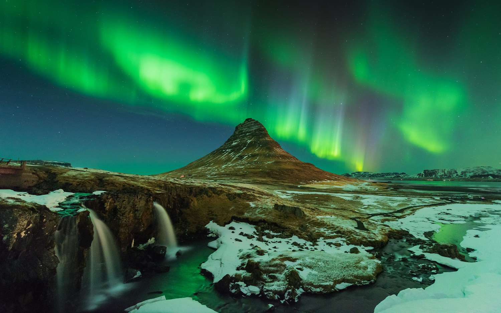

Дарко
Петрушевски
Зошто сакам да патувам? Сакам да патувам, да откривам нови места и да запознавам нови пријатели. Секогаш кога е можно сакам да патувам со автомобил. Секое патување за мене е доживување. Сакам да одам на летување, да посетувам убави плажи и да уживам во чистото море. Но, исто така сакам да одам на планина, да скијам или да истражувам некои нови непознати предели. Сакам да одам на различни места, да ја запознавам културата на други луѓе и да ја пробам храната која ти ја јадат. Се она што е ново и непознато за мене е предизвик.
Бора Бора
Бора Бора е познат како рајски остров, со репутација прочуена на далеку. Изолиран од остатокот од светот, со лагуна која наликува како палетата на уметник со сина и зелена боја. Името Бора Бора означува “Прво раѓање“. Изворно се изговара “пора пора“.
Видео за Бора Бора
Исланд
Eдно од омилените места кои што би сакал да ги посетим e Исланд каде што се гледа поларната светлина. Исто така, многу сакам да го посетам Блу Лагун.
Поглед од Исланд кон Млечен пат Гштаад
Ски центар без сообраќај,шеталиште наредено со луксузни бутици и швајцарска архитектура го прават градот како бајка и едно од најтрадиционалните зимски дестинации во Европа. Шармантните села на вила ги украсуваат влезовите на различните скијачки области.
Видео за ски центар Gstaad